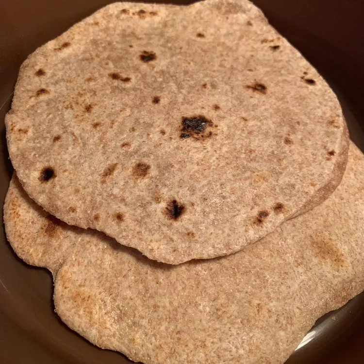

Roti

What Is Roti
Roti is a flatbread that originated in South Asia and is a staple food in the Indian subcontinent. It's made from wheat flour, mixed with water and sometimes salt, and cooked on a flat or slightly concave iron griddle called a tawa. Roti is often eaten with curries or cooked vegetables, and can be used as a carrier for them.
Ingredients
- *Ingredients Here*
- 2 cups durum wheat flour
- ¾ cup water
- 1 tablespoon vegetable oil
- ½ teaspoon salt
Steps
- Stir flour, water, oil, and salt together in a medium bowl until well combined and pulling away from the sides. Turn dough out onto a well-floured surface and knead until smooth and pliable, about 10 minutes.
- Divide dough into 12 equal pieces. Form each piece into a round. Working with one round at a time while all others are covered with a damp cloth, flatten with the palm of your hand, then use a rolling pin to roll into 6- to 8-inch diameter circle.
- Heat a dry skillet or tava over medium-high heat. Cook one roti at a time in the hot skillet until golden with some darker brown spots, about 1 minute per side, As it cooks, roll the next roti. Serve warm.